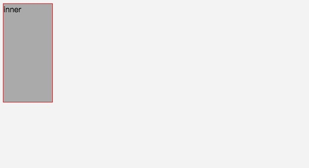

position: fixed not working ?
<div class="wrap">
<div class="inner">inner</div>
</div>
body {
background: #f5f5f5;
}
.wrap {
width: 100px;
height: 200px;
border: 1px red solid;
transform: translate3d(0, 0, 0);
// 将把GPU转化为CSS转换的动作，使它们更平滑(更高的FPS)。
}
.inner {
position: fixed;
top: 0;
left: 0;
right: 0;
bottom: 0;
background-color: rgba(1, 1, 1, .3);
}
效果图：

明显看到蒙层没有完全覆盖视口，只在inner 容器上生效，原因是什么呢？
解析
如果 position:fixed 的父元素加了 transform：xxx 之后 position:fixed 会根据父元素定位。
原因应该是 transform：xxx 形成了 Stacking Context -- 堆叠上下文。
堆叠上下文（Stacking Context）：堆叠上下文是 HTML 元素的三维概念，这些 HTML 元素在一条假想的相对于面向（电脑屏幕的）视窗或者网页的用户的 z 轴上延伸，HTML 元素依据其自身属性按照优先级顺序占用层叠上下文的空间。
堆叠上下文的创建，该元素会影响其子元素的固定定位。设置了 position:fixed 的子元素将不会基于 viewport 定位，而是基于这个父元素。
So，如何触发一个元素形成层叠上下文 ？方法如下（参考自 MDN）：
- z-index 值不为 "auto"的 绝对/相对定位元素，
- 固定（fixed） / 沾滞（sticky）定位（沾滞定位适配所有移动设备上的浏览器，但老的桌面浏览器不支持）
- z-index 值不为 "auto"的 flex 子项 (flex item)，即：父元素 display: flex|inline-flex，
- z-index 值不为“auto”的grid子项，即：父元素display：grid
- opacity 属性值小于 1 的元素（参考 the specification for opacity）
- transform 属性值不为 "none"的元素
- mix-blend-mode 属性值不为 "normal"的元素，
- transform 属性值不为“none”的元素
- filter 值不为“none”的元素，
- perspective 值不为“none”的元素
- clip-path 值不为“none”的元素
- mask / mask-image / mask-border不为“none”的元素
- isolation 属性被设置为 "isolate"的元素
- 在 will-change 中指定了任意CSS属性
- webkit-overflow-scrolling 属性被设置 "touch"的元素
- contain 属性值为“layout”，“paint”，或者综合值比如“strict”，“content”
上面这些都会影响position:fixed 定位吗？不是
会影响的只有：
- transform 属性值不为"none"的元素
- perspective值不为"none"的元素
- 在 will-change 中指定为"transform"属性
- filter 属性
四个属性影响的原因
transform
根据 W3C 对 transform的描述：
Specifying a value other than none for the transform property establishes a new local coordinate system at the element that it is applied to.
对于指定了 transform 特性且值不为 none，会将在应用它的元素处建立新的局部坐标系。
因此，position:fixed 的元素，如果其祖先元素存在非 none 的 transform 值 ，那么该元素将相对于设定了 transform 的祖先元素进行定位，此时 position:fixed 定位基于父容器，而不是整个视口。
perspective
The use of this property with any value other than none establishes a stacking context. It also establishes a containing block (somewhat similar to position: relative), just like the transform property does.
将此属性在非 none 时，将建立层叠上下文。就像 transform 属性一样，它也建立了一个包含块（有点类似于position：relative）。
will-change
根据 W3C 对 will-change的描述
If any non-initial value of a property would cause the element to generate a containing block for fixed positioned elements, specifying that property in will-change must cause the element to generate a containing block for fixed positioned elements.
其思想是，一旦指定了will-change: transform，就应该随意地添加、删除、更改转换，而不需要定义为 fixed 定位的元素后代重新布局。
请注意，使用will-change的其他值（例如，opacity, top）不会更改 fixed 定位的后代的位置。
filter
根据 W3C 对 filter 的描述：
A value other than none for the filter property results in the creation of a containing block for absolute and fixed positioned descendants unless the element it applies to is a document root element in the current browsing context. The list of functions are applied in the order provided.
对于指定了 filter 样式且值不为 none 时，被应用该样式的元素其子元素中如果有 position 为 absolute 或 fixed 的元素，会为这些元素创建一个新的容器，使得这些绝对或固定定位的元素其定位的基准相对于这个新创建的容器。